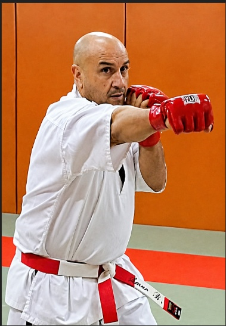

7e DAN Karaté Contact
Grade d'expert, sommet d'un parcours technique et martial de haut niveau.
Karaté Contact · Disciplines Associées
7e DAN · Directeur technique départemental de la Haute-Garonne · Expert fédéral & arbitre national en Karaté Contact.

7e DANPlus de quarante années passées sur le tatami ont façonné un maître reconnu du Karaté Contact et des disciplines associées.
Ceinture noire 7e DAN, Amar Bensadallah enseigne au sein de l'US Karaté Ramonville, en Haute-Garonne. Diplômé d'État DEJEPS et titulaire du diplôme d'Instructeur Fédéral, il conjugue exigence technique, pédagogie et transmission auprès des combattants comme des futurs encadrants.
Directeur technique départemental de la Haute-Garonne, arbitre et juge national, expert fédéral et régional, il occupe également des fonctions de responsable des grades et de référent inter-régions en Karaté Contact et Karaté Full Contact. Une double casquette de compétiteur et de formateur, sur le tatami comme dans la formation à la sécurité.
Grades, fonctions officielles et qualifications.
Grade d'expert, sommet d'un parcours technique et martial de haut niveau.
Responsable technique de la Haute-Garonne en Karaté et disciplines associées.
Diplôme d'Instructeur Fédéral — habilitation à former et encadrer.
Karaté Contact, disciplines associées et inter-disciplines.
Référent du GRETA Toulouse pour la formation des agents de sécurité.
Karaté et disciplines associées — diplôme d'État de niveau professionnel.
Reconnu expert au niveau régional dans la discipline.
Karaté Contact et Karaté Full Contact à l'échelle inter-régionale.
Karaté Contact & Full Contact — ZID Midi-Pyrénées.
Expert fédéral en Karaté Contact — la plus haute reconnaissance fédérale.
Du combat pieds-poings à l'arbitrage et la formation.
Discipline de combat pieds-poings, mêlant techniques de karaté et puissance de frappe au contact. Cœur de l'expertise et du grade 7e DAN.
Référent inter-régions et responsable des grades en Full Contact pour la ZID Midi-Pyrénées.
Encadrement et direction technique des disciplines associées au karaté, de l'initiation à la haute performance.
Arbitre et juge national en karaté contact, disciplines associées et inter-disciplines.
Formateur d'agents de sécurité et référent du GRETA Toulouse : la rigueur martiale au service du métier.
Plus haute reconnaissance fédérale dans la discipline.
Pilotage technique du karaté et des disciplines associées sur le département.
Karaté Contact & Karaté Full Contact.
Karaté Contact et Karaté Full Contact.
Formation des agents de sécurité.
05
Cours, stages, passages de grade, arbitrage ou formation : prenez contact via le club US Karaté Ramonville.
Visiter le site du club